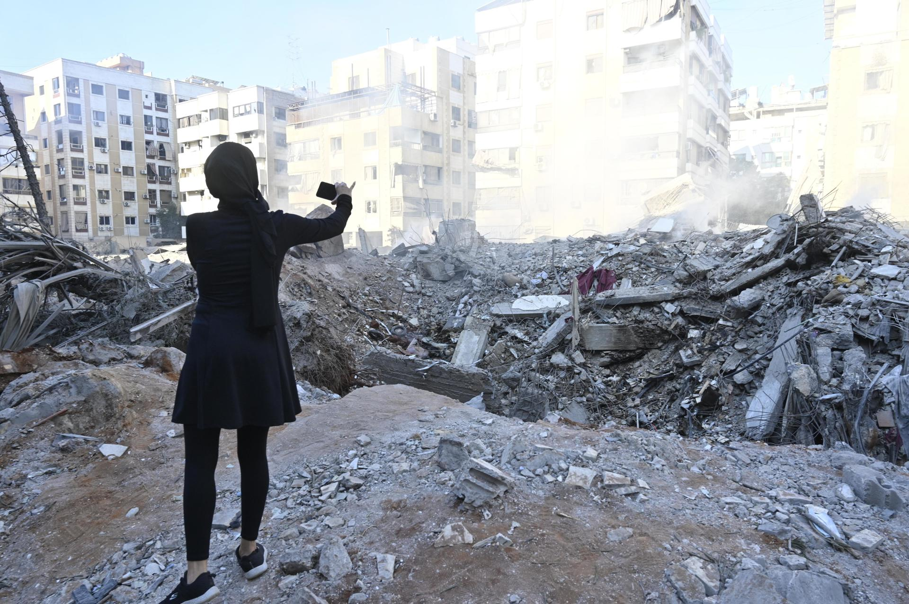

L'Exèrcit israelià ha anunciat que ha llançat aquest diumenge una operació a "gran escala" contra els rebels houtis a la ciutat portuària d'Al Hodeida, a l'oest del Iemen, un dia després que els insurgents xiïtes reivindiquessin el llança-
ment d'un míssil balístic contra l'aeroport Ben Gurion de Tel Aviv.
L'agència de notícies Saba, dels houtis, ha informat escaridament que "l'agressió israelina té com a objectiu la ciutat d'Al Hodeida", concretament contra els ports d'Al Hodeida i Ras Issa, dels més importants al Iemen, així com dues
plantes elèctriques. L'Exèrcit israelià afirma en un comunicat que "desenes d'avions de les forces aèries, inclosos caces i avions de reproveïment i inteligència, han atacat objectius militars del règim terrorista houti a les zones de Ras
Issa i Al Hodeida al Iemen", on tenien com a blanc "centrals elèctriques i el port marítim, usat per importar petroli".
D'altra banda, Israel ha tornat a llançar un atac aeri aquest diumenge contra els suburbis del sud de Beirut, a penes 24 hores després de confirmar la mort del líder del grup ziïta Hezbollah, Hassan Nasrallah, en un bombardeig el diven-
dres contra la capital libanesa.
